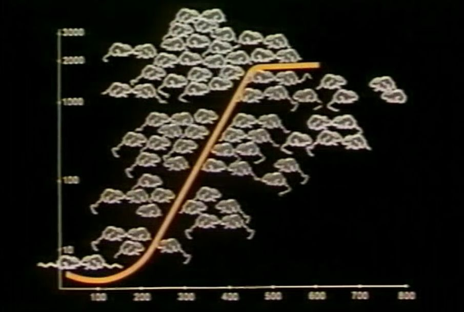

1968年 7月 9日
25號宇宙的第一天，研究員將只有48天大的4隻公鼠及4隻雌鼠放入居住地，
這批最新來的小老鼠們，就是25號宇宙的「亞當與夏娃」。
3個月過後，老鼠們開始劃分領地、擇偶並交配。在第104天時，第一窩新的小老鼠們誕生了。
隨後老鼠的數量開始翻倍成長，平均每55天人口就會加倍，直到居住地達到620隻老鼠時，翻倍的天數才由55天變為145天。
老鼠的數量不斷成長，直到居住地的老鼠數量達到了2200隻，這時25號宇宙發生了奇怪的事情：
明明容納數量是3840隻，為什麼數量卻停止成長了？
老鼠數量達到一定數量時，牠們開始不願意進行社交 所有的社交行為，都只剩下暴力 負責哺育的雌鼠們攻擊性也越來越高，甚至開始攻擊小鼠們 在這個階段受孕率大幅下降，甚至有幼鼠「消失」在統計數量中 惡性循環下，25號宇宙的生育率也跌至谷底。
1973年5月23日
第600天開始，幼鼠的數量直線下滑。 第920天，最後一隻幼鼠誕生的日子，也宣告著25號宇宙即將瓦解。 臨近滅絕的時候，事情也不想一些樂觀人士所設想那樣，會有一組小鼠會重新復興25號宇宙。 一切都太晚了，大家……都老了。 在第1588天，最後一隻小鼠誕生668天之後所做的調查中顯示，還活著的小鼠們的平均年齡已經達到了776天，超過了絕經期200天。 就算有小鼠出現了本應有的能力，小鼠們也已經過了繁殖的年齡了。 那種在種族頻臨滅絕的時候，有一小支集團重新振興整個物種的故事，果然也只是個美好的幻想。